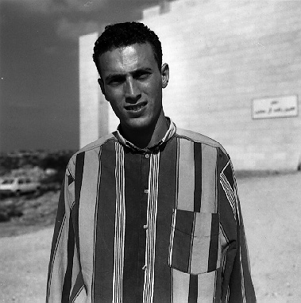
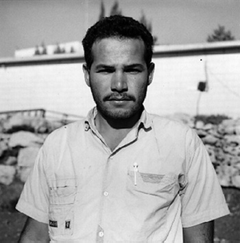
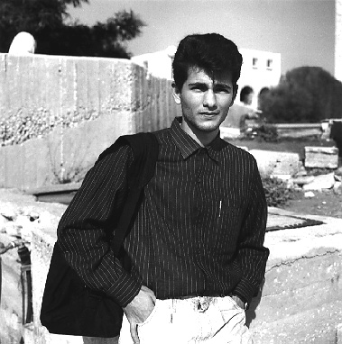

The following gallery contains portraits of a number of university students from Gaza who study at Birzeit University, including testimonies of some of the students you will meet.
Start a photographic journey with Gazan students in the "Photo Gallery". Click on each portrait to advance to the next frame. (A bit image intensive.)
Meet the students. (Image intensive.)
Read personal testimonies of some of the students.
(Much less image intensive.)